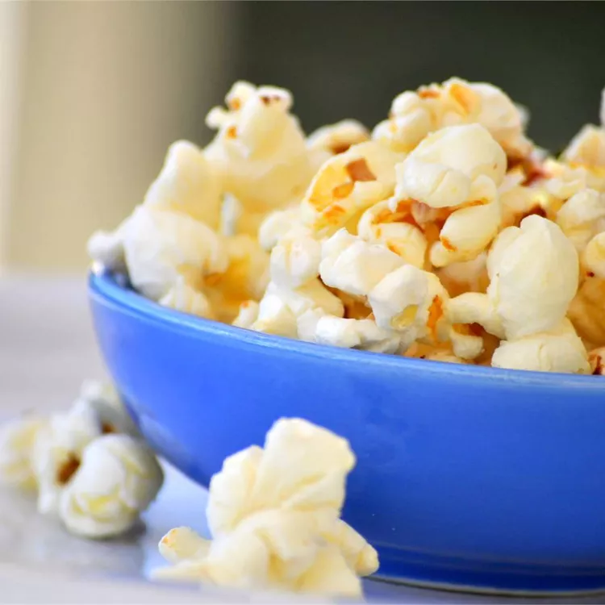

Ketle corn

Description
Kettle corn is an old-fashioned, county fair treat. Your family will never want plain popcorn again! If you use white sugar, it will taste like popcorn balls; if you use brown sugar, it will taste like caramel corn.
Make kettle corn at home with just three easy-to-find ingredients. Sound too good to be true? It's not! This kettle corn recipe is a true crowd-pleaser.
Ingredients
- Popcorn kernels
- Oil
- Sugar
- Tip
Steps
- Heat vegetable oil in a large pot over medium heat. Stir in popcorn kernels and sugar.
- Cover and shake the pot constantly to prevent sugar from burning. When popping has slowed to once every 2 to 3 seconds, remove the pot from the heat and shake for a few minutes until popping stops.
- Pour popcorn into a large bowl and allow to cool, stirring occasionally to break up large clumps.